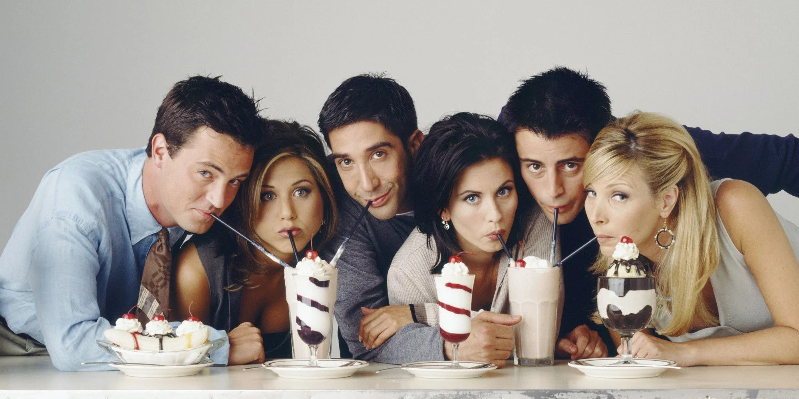

Monica, Rachel, Phoebe, Chandler, Ross y Joey son seis amigos treintañeros que viven en Nueva York. Juntos afrontan con humor las dificultades propias de su edad: líos amorosos, trabajo, familia y su propia convivencia.
Estrenada en septiembre de 1994, "Friends" se convirtió rápidamente en la serie favorita del público joven y urbanita de Estados Unidos, que se identificó al instante con las peripecias vitales de sus protagonistas. Así, en su temporada de debut, consiguió colocarse como el octavo show con más audiencia de su país, por delante de clásicos del género, como "Frasier" o "Loco por ti". Al año siguiente se encaramó a la tercera plaza del ránking y, desde entonces, no volvió a bajar del cuarto puesto en sus diez temporadas en antena.
Ross, Joey, Chandler, Mónica, Rachel y Phoebe
Martta Kauffman y David Crane
Gary Halvorson, Kevin S, Bright, Gail Mancuso y Michael Lembeck
22 Septiembre 1994 hasta 6 Mayo 2004
10 temporadas y 237 episodios